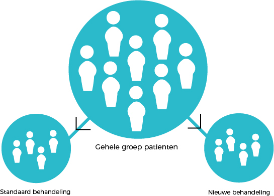

Wat is een klinische trial?
Een klinische trial is het testen van een nieuwe behandeling bij proefpersonen. Na succesvolle trials in laboratoria en bij dieren zijn klinische trials de laatste stap om vast te stellen of een nieuwe behandeling werkzaam en veilig is. Een nieuwe behandeling wordt alleen maar toegelaten wanneer uit klinische trials blijkt dat de behandeling werkzaam is en geen ernstige bijwerken laten zien.
Een klinische trial is het testen van een nieuwe behandeling bij proefpersonen. Na succesvolle trials in laboratoria en bij dieren zijn klinische trials de laatste stap om vast te stellen of een nieuwe behandeling werkzaam en veilig is. Een nieuwe behandeling wordt alleen maar toegelaten wanneer uit klinische trials blijkt dat de behandeling werkzaam is en geen ernstige bijwerken laten zien. Klinische trials worden uitgevoerd in verschillende stappen die we fasen noemen. In elke fase willen we nieuwe informatie over de behandeling en de effecten hiervan te weten komen. De verschillende fasen worden aan u als patiënt voorgesteld afhankelijk van uw conditie, type en stadium van uw kanker. Elke nieuwe fase is afhankelijk van informatie uit een eerdere fase en vloeit hieruit voort .

Om in fase III studies beide groepen goed met elkaar te kunnen vergelijken en zo een betrouwbaar antwoord te geven op de vraag welke behandeling de beste resultaten biedt, bepaalt een lotingssysteem (randomisatie) welke deelnemer in welke groep terechtkomt. De helft van de patiënten die deelneemt krijgt de standaard behandeling, de andere helft de nieuwe behandeling. Wie welke behandeling zal ondergaan, wordt bepaald door toeval. Denk hierbij bijvoorbeeld aan het opgooien van een munt: kop of munt. Meestal gebeurd het randomiseren door gebruik te maken van speciale software.
